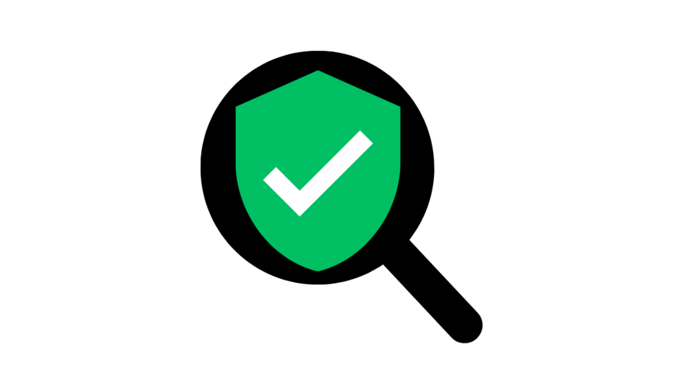
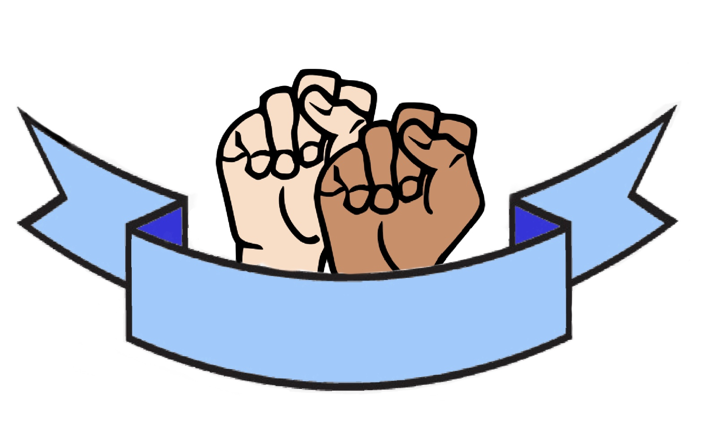
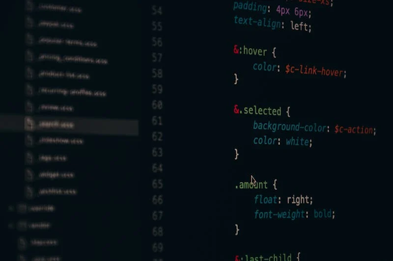
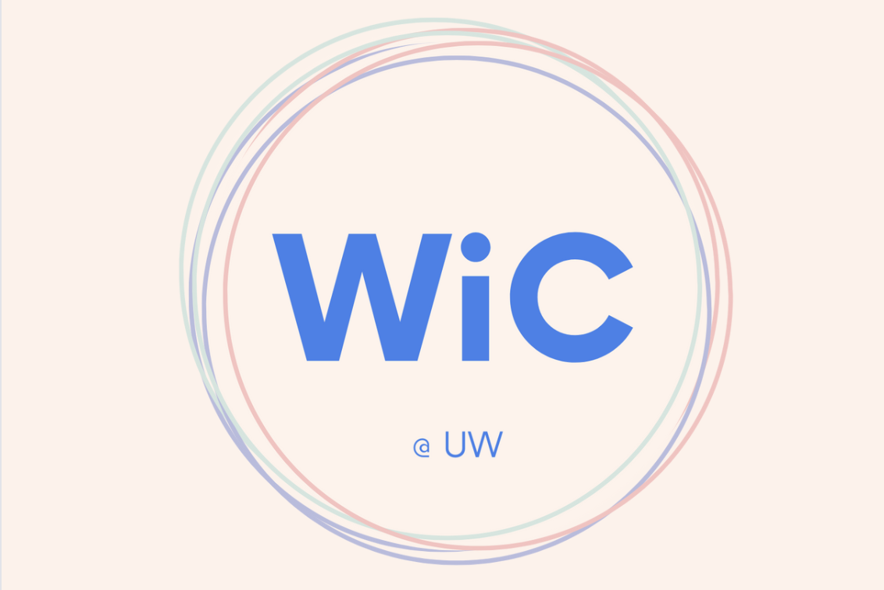
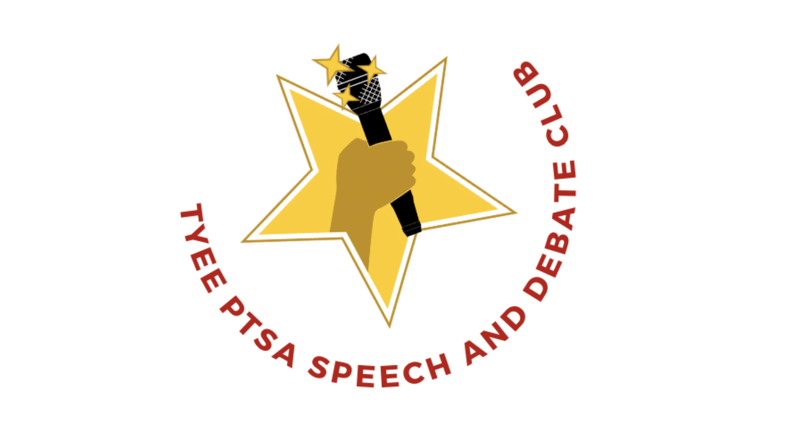
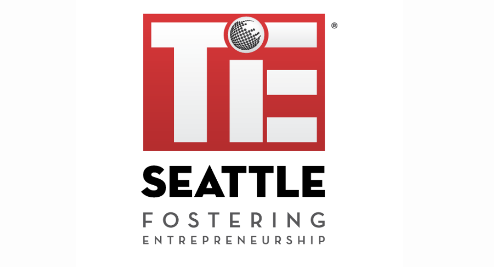

Hi! I’m Arya, an undergraduate student majoring in computer science at UW-Seattle.
I’m passionate about working on tech that makes a difference.
In high school, I spent a year researching and developing machine learning (ML) models to help tackle Seattle’s homelessness crisis. My models identified where resources should be allocated to maximize the number of people transitioning out of homelessness.
In college, I’ve continued similar research, applying ML to make a difference, under the Disaster Data Science Lab. My work focused on applying ML techniques to predict bridge characteristics to enable realistic emergency prioritization planning during natural disasters under the U.S. Dept. of Transportation. Now, I'm doing research within the Allen School on developing a real-time predictive translation system with zero delay, leveraging large language models to anticipate and translate spoken language seamlessly. This project aims to push the boundaries of AI by integrating streaming translation models and exploring how LLMs can self-correct and maintain translation quality.
Outside of my research, I’m deeply passionate about outreach, specifically within education. At UW, I am leading Women in Computing’s Outreach committee, where we run beginner-friendly CS workshops for K-12 students. Last year, I was also a teacher’s assistant for the Interactive Intelligence (I2) Club’s Deep Learning/Neuroscience course. This year, I’ve loved co-leading the intro Neuroscience/AI course to educate more students on machine/deep/reinforcement learning, computer vision, and neuroscience! I have also co-led I2’s Kaggle Competition Club, where I directed weekly predictive ML workshops on Linear/Logistic Regression, Random Forest, and XGBoost models in Python.
In the future, I would love to leverage my ML or Data Science expertise as a ML Engineer, SWE, or Data Scientist, which focuses on addressing significant challenges across any domain.
Recent Work
Undergraduate AI Research Assistant at Mobile Intelligence Lab
- Developed a real-time predictive translation system using Python, TensorFlow, and Hyak clusters to eliminate spoken-language delays via LLM integration.
- Integrated streaming translation models inspired by Meta’s SeamlessM4T, improving prediction accuracy and enabling robust self-correction; presented NLP findings in cross-disciplinary lab meetings.

DeFakeIt – 🥇 1st Place @ SWECCathon 2025 (Sponsored by Google & Eat Together)
- Won 1st place for building a real-time deepfake detection tool during SWECCathon 2025.
- Built a Manifest V3 Chrome extension (JS/HTML/CSS) for deepfake detection via screenshot, drag-&-drop, and clipboard paste.
- Engineered a Docker-containerized Flask backend running dual MesoNet CNNs (MesoNet4 & MesoNetInception4), deployed on Google Cloud Run with sub-2s inference.
- Check out our project submission and demo here!
Undergraduate ML Research Assistant at Disaster Data Science Labs
- Developed 10 major predictive machine learning models (XGBoost, Neural Networks, Hierarchial Neural Network, AutoGluon, Autoencoder Neural Network) in Python with NBI data under U.S. Dept. of Transportation to predict bridge characteristics better aligned with predictions of current bridge performance in natural hazards, enabling realistic emergency prioritization planning for WA natural disasters.
- Improved existing model accuracy by 3-15% through extensive database cleaning and feature engineering leveraging Python and machine learning libraries such as TensorFlow, NumPy, and Scikit-Learn in this paid research role.
- Developed NLP embeddings for ML models (BERT, Word2Vec, XLNet) to better analyze textual data to improve model performance by 7%.
- Contributor to research paper on factors impacting bridge performance during natural disasters, focusing on National Bridge Inventory use, ML algorithms for noisy data, and performance measures for regression and classification tasks.
- Collaborated with advisors and UW Civil Engineering team members.
- Work showcased at Pacific Earthquake Engineering Research Center.
Maple Room Study App Co-Founder & Developer
- Developed web application using React, Python, HTML/CSS/JS, Google Firebase, and Django to improve study room access for 600+ Maple Hall residents by allowing students to check real-time room availability.
- Managed back-end services with Django, utilizing RESTful APIs and AWS (via Alexa Timers API) for functionality.
- Check it out here!
Senior Thesis/Independent Research
- Conducted interviews with people involved in the intersection of AI, homelessness, and ethics to build a final paper.
- Built machine learning models (Random Forest, Logistic Regression, XGBoost) in R based on predictive factors to analyze different datasets in NY, TX, and WA to help shelters best aid people experiencing chronic homelessness.
- Implemented linear regression, XGBoost, and other machine learning models in R with different datasets in New York, Texas, and Washington to explore the impact of housing resources on the homelessness crisis.
- Developed Shiny App. After the user chooses the rate of people successfully transitioning out of homelessness, my application recommends what type of homeless shelter/program one should use to achieve it.
- Check out my senior thesis final presentation here!

SignScribe - DubHacks 2023 Hackathon
- Built web application with Python image classification to real-time transcribe ASL during web conferencing.
- Led front-end development to craft user interface using JavaScript, HTML, and CSS.
- Collaborated with a team on GitHub for version control and project management.
- Check it out here!
App Development Intern at Bio Integrative Health Center
- Researched step count to user health correlation.
- Coded iOS app baseline structure to track user step data anomalies in Python via Apple Health app.

ML Engineer Intern at CerebrumX
- Implemented linear regression models to predict car prices using age, brand, and mileage in Python.
- Optimized algorithms with iterative training for improved accuracy and performance.
Leadership & Outreach within Education

Women in Computing (WiC)
- Outreach Head (June '24 - Present)
- Lead biweekly meetings with committee members, overseeing the planning and execution of workshops and outreach efforts to engage more students from underserved communities in computer science education. Taught 200+ K-12 students about Scratch Game Development, Personal Portfolio Design, and AP Computer Science A.
- Outreach Committee Member (Nov '23 - June '24)
- Helped plan and run three workshops for 50+ K-12 students, introducing them to computer science concepts.

Interactive Intelligence (I2)
- Education Lead (June ‘24 - Present)
- Co-led I2's introductory course on AI and Neuroscience, delivering 50+ hours of content to 150+ students, designing engaging curriculum, writing detailed articles on topics like Machine Learning and Large Language Models, and managing smooth operations by recruiting and coordinating six TAs.
- Co-authored the I2 Grimoire, a 118-page student-created textbook designed to supplement the Interactive Intelligence introductory course on AI & Neuroscience, providing clear explanations and synthesis questions on topics such as Machine Learning, Deep Learning, and Language Modeling.
- Link to Course
- Link to Textbook
- Teacher's Assistant (Mar ‘24 - June ‘24)
- TA-ed for I2's intro course. Facilitated a 10-week Deep Learning/Neuroscience course with Python, PyTorch, and LaTeX for the largest TA group (~30% of the class).
- Watch my Lecture
- Kaggle Competition Club Co-Lead (Mar ‘24 - June ‘24)
- Directed weekly predictive ML workshops on Linear/Logistic Regression, Random Forest, XGBoost models in Python (Matplotlib, Pandas, Numpy) to prep 20+ students for Kaggle competitions.
- View my course certificate!

Debate Club Founder/Coach (Jan ‘21 - June '23)
- Co-founded the Tyee Speech and Debate team to introduce debate to middle school students.
- Led coaching in middle school debate every week, guiding students through techniques and strategies.
- Coached 80+ students, several of whom placed in the top 5 in competitions.
- Founded and managed the @tyeespeechdebate Instagram account to promote the club and its activities.

TiE Seattle
- Student Director (Oct ‘21 - Jan '23)
- Led bi-weekly workshops for 23 students (grades 8-12), providing guidance and feedback for TIE competitions.
- Co-ran the @tieseattle Instagram account to promote events and workshops.
- Student Competitor (Oct ‘20 - June '21)
- Collaborated with a team to create a business model for a personalized subscription clothing service focusing on thrifted and sustainable items.
- Top 8th TyE Globals Business Competition Finalist and won the TyE Best Execution Award.
- Spoke at EcoSoc Youth Forum’s 10th anniversary to discuss sustainability within the fashion industry.
- Co-pitched our presentation, directed/edited our MakerFaire video, and led our website, TikTok, and Instagram marketing for @ecofitzco.
- Watch our pitch presentation!
Get In Touch
Feel free to reach out to me through email at aryas1@cs.washington.edu or connect with me on LinkedIn!
{kind=link}
{kind=link}
{kind=link}
{kind=link}
{kind=link}
{kind=link}
{kind=link}
{kind=link}
{kind=link}
{kind=link}
{kind=link}